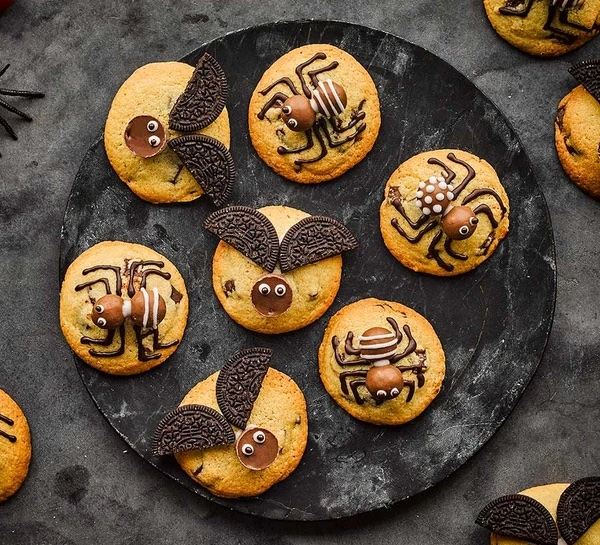

Halloween Cookies Recipe

Ingredients
- 150g butter, softened
- 50g caster sugar
- 100g light brown soft sugar
- 1 tsp vanilla extract
- 250g plain flour
- ¼ tsp baking powder
- 100g milk or dark chocolate chips
- 60g dark chocolate, melted
- 60g royal icing sugar, mixed with 2 tsp water
- 20 Maltesers
- 5 cream-filled chocolate sandwich cookies
- 10 caramel-filled chocolates
Instructions
- Heat the oven to 180C/160C fan/gas 4, and line two baking sheets with baking parchment. Beat the butter and sugars together with an electric whisk until light and fluffy. Add the vanilla and egg and beat again to combine. Stir in the flour and baking powder with a wooden spoon until you have a stiff dough, then fold in the chocolate chips.
- Divide the dough into 20 pieces and roll into balls. Arrange on the prepared baking sheets, well spaced out so there's space for spreading (you may need to bake them in batches). Press the tops of the cookies down very slightly using the palm of your hand or the bottom of a glass. Bake the cookies for 10-12 mins until golden around the edges, then leave to cool on the baking sheets for 10 mins. Transfer to wire racks and leave to cool completely.
-
To make the spider cookies, lay 10 of the cooled cookies out in front of you. Spoon the melted chocolate into a piping bag and the royal icing into another, then snip off the ends using scissors. Pipe a dot of royal icing onto the back of two Maltesers, and arrange these onto one of the cookies to create the head and body of the spider. Repeat with the remaining nine cookies and the rest of the Maltesers. Pipe eight spider legs around the bodies of the spiders using the chocolate. Pipe two small dots of royal icing onto the heads to create eyes, then pipe very small dots of chocolate over the eyes to create pupils. If you like, decorate the bodies with the royal icing.
-
To make the bat cookies, lay the remaining 10 cookies out in front of you. Separate the cream-filled chocolate sandwich cookies, and carefully scrape the cream filling off the chocolate cookie pieces. Cut the chocolate cookie pieces into semicircles using a small serrated knife. Stick a caramel-filled chocolate onto the middle of each cooled cookie using the royal icing, then use a little more to stick a chocolate cookie semicircle on either side of the chocolates to make the bat wings. Pipe eyes onto the chocolates using the royal icing and melted chocolate.
Source